EE5011: Fitting of Functions
Rohan Rao, EE14B118
1 Programming Assignment
1.1 The function is f(x) = x*J1(x).
import scipy.special.jn as jn
def f(x):
return jn(1,x)
The Chebyshev form of an interpolating polynomial (for x in range [-1,1]) is as follows:
p(x) = b0T0(x) + b1T1(x) + ... + bNTN(x)
Since we are given data for N points (xi, yi) for i=0,1,2,...N, we need to determine the coefficients bk such that p(xi) = yi. This can be written in the form of a linear system Tb=y. If the data is not contained in the interval [-1,1], it needs to be transformed accordingly. The final function for fitting the polynomial is below. This can also be obtained by using the inbuilt np.polynomial.chebyshev.chebfit function in Numpy.
def chebfit(xdata,ydata,x):
...: n=len(xdata)
...: xmax=max(xdata)
...: xmin=min(xdata)
...: xdata=(2*xdata-xmax-xmin)/(xmax-xmin)
...: T=np.zeros((n,n))
...: T[:,0]=1
...: T[:,1]=xdata
...: for j in range(2,n):
...: T[:,j]=2*xdata*T[:,j-1]-T[:,j-2]
...: b=np.dot(np.linalg.inv(T),ydata)
...: x=(2*x-xmax-xmin)/(xmax-xmin)
...: y=np.zeros(len(x))
...: for j in range(n):
...: y=y+b[j]*cos((j-1)*arccos(x));
...: return y,b
The coefficients (semilog) plot obtained by running this on 50 points in range (0,5) is as follows:
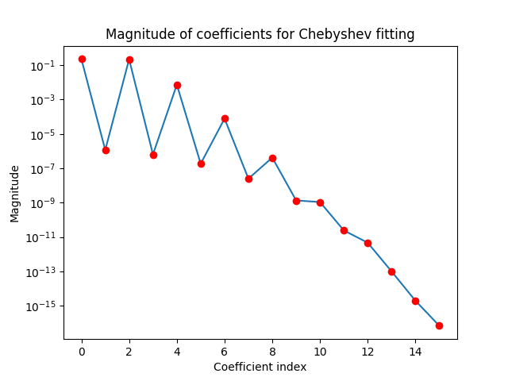
Thus, the use of 15 coefficients is sufficient for obtaining an accuracy of the order of 15 significant figures.
The Chebyshev fit can be generated using the following commands:
def chebpoly(n,x):
...: if(n==0):
...: return 1
...: if(n==1):
...: return x
...: return 2*x*chebpoly(n-1,x)-chebpoly(n-2,x)
def chebapproxfn(coeff,x):
...: n=len(coeff)
...: s=0
...: for i in range(n):
...: s+=coeff[i]*chebpoly(i,x)
...: return s
The error obtained over the interval 0 < x < 5 is as follows:
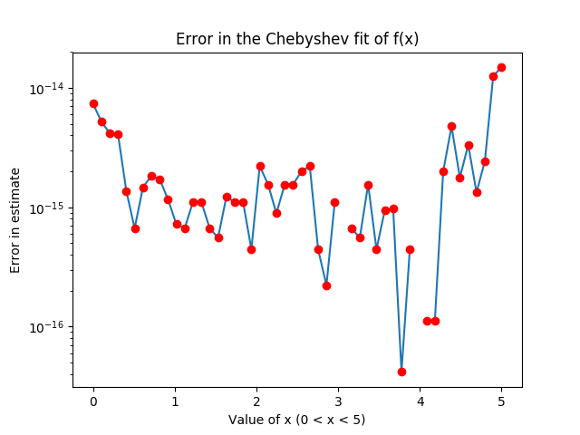
Discontinuities in the above semilog graph are due to an error of exactly 0.
The error can be seen to be of the order of 10 − 14 to 10 − 15, approximately.
Similarly, the chebder function from numpy.polynomial.chebyshev can be used as follows:
dercoeff=np.polynomial.chebyshev.chebder(coeff)
errd=chebapproxfn(dercoeff,xdata)-xdata*jn(0,xdata)
semilogy(xdata,errd)
The plot is as below:
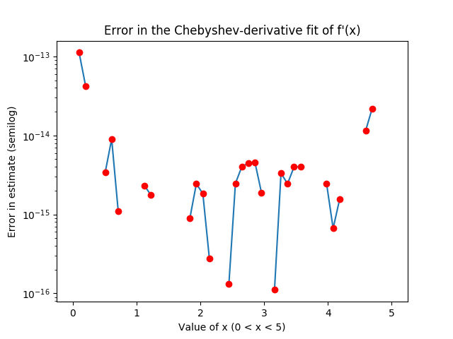
The discontinuities are due to an error of exactly zero. Once again, the error is at worst, of the order of 10 − 13.
The difference of samples method, for a value of delta=0.01, gives the following plot:
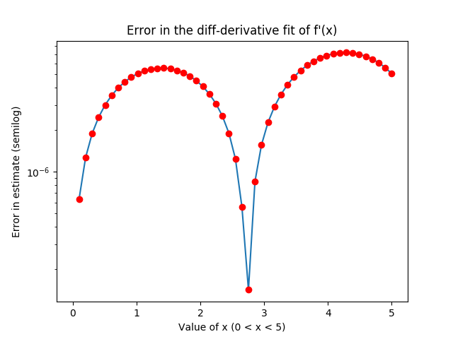
Changing delta to 1e-5 gives the following plot:
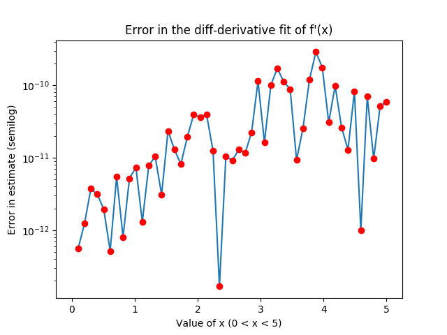
This has an error of the order of 10 − 10. In general, using the difference of samples method when calculating the derivative does not allow us to use such a small value of delta, and so the error would be considerably more than obtained in the second graph. Graph 1 is somewhat more reasonable, but the following shows the error for delta=0.1, which is for 50 points being sampled.
This error is of the order of 3 decimal places, and so is not very accurate, relative to the Chebyshev derivative, which is significantly more accurate.
1.2 The function is f(x) = sin(x).
Using the functions defined above, the following error plot is obtained with 10 coefficients and 200 samples.
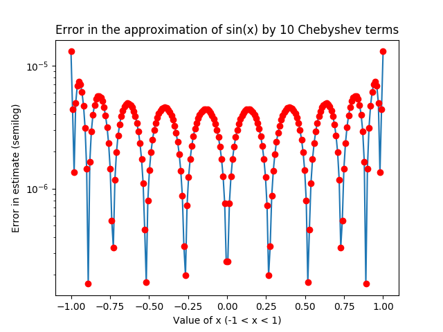
The error is not uniform, it is of the form of an FIR filter with regularly spaced taps.
1.3 Five functions
1.3.1 Fitting the function f(x) using 200 points in the range [-1,1] and 15 coefficients for the Chebyshev series gives the following plot:
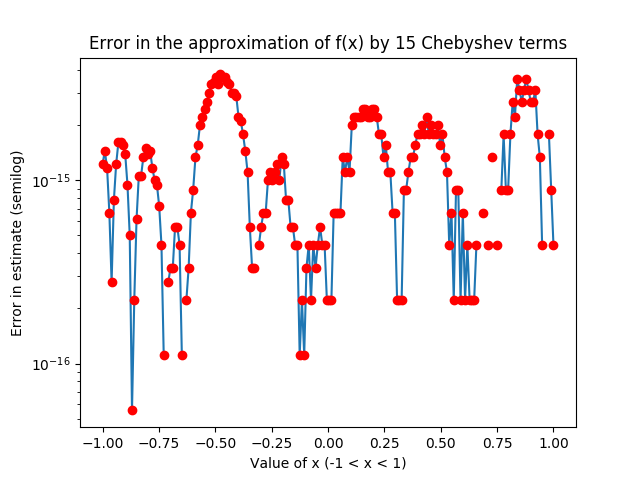
The maximum error over the interval is of the order of 10 − 15.
1.3.2 Fitting the function u(x) using 200 points in the range [-1,1] and 30 coefficients for the Chebyshev series:
The function u(x) = e − |x| is not easily approximated over the full interval by a single polynomial set. The use of 30 coefficients still gives an error of ~ 10 − 3.
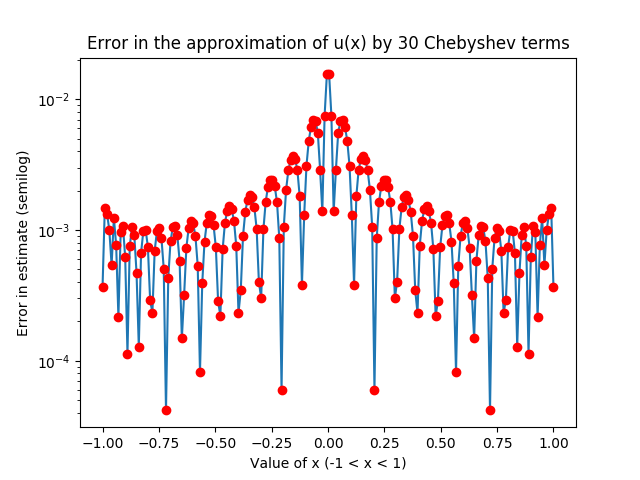
When considering the split intervals of [-1,0) and (0,1] we get a significantly better result with just 15 coefficients for [-1,0):
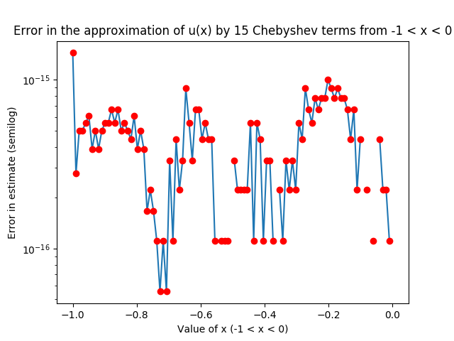
The discontinuties are due to an error of exactly zero on a semilog plot.
Similarly, for positive values of x, the 15 coefficient plot is below:
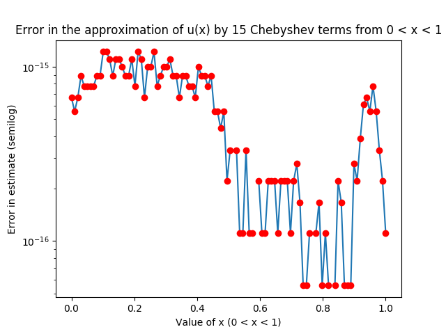
This shows that splitting the function u(x) into two intervals and fitting each separately correctly removes the kink in the function at x=0 and allows it to be fitted properly.
1.3.3 Fitting the function v(x) using 200 points in the range [-1,1] and 30 coefficients for the Chebyshev series:
The function v(x) has a branch cut discontinuity at x=-1.1, which is outside the range [-1,1] but still causes the number of coefficients required to increase significantly.
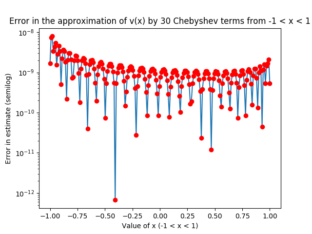
The plot above shows that using 30 coefficients gives an error of the order of 10 − 8. The use of 15 coefficients gives an error of the order 10 − 6.
1.3.4 Fitting the function g(x) for different values of delta and 200 points in range [-1,1]:
For delta=0.1, 200 points are insufficient for obtaining an error of being 0.1 even by taking upto 50 coefficients.
For delta=1, about 15 terms are required for an error of order 10 − 6:
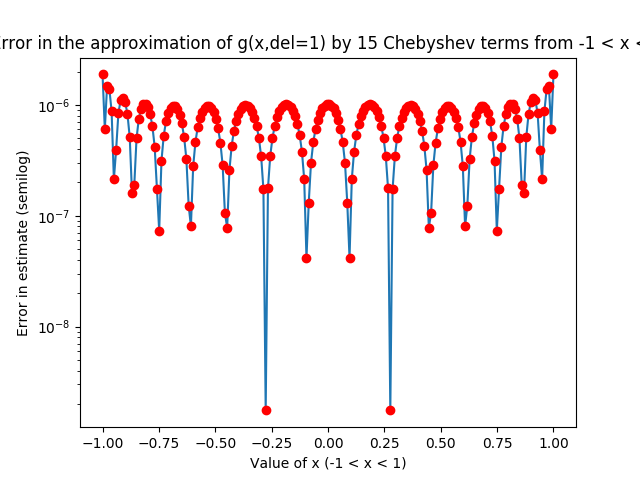
For delta=10, a significantly smaller number of terms (N=7) is required for very high accuracy:
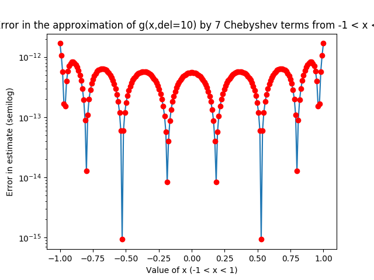
For delta=100, just 3 terms are necessary for such accuracy:
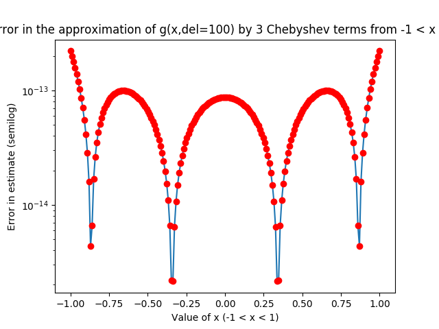
This shows that the smoother the function becomes over the interval, the more easily it can be approximated by a Chebyshev fit.
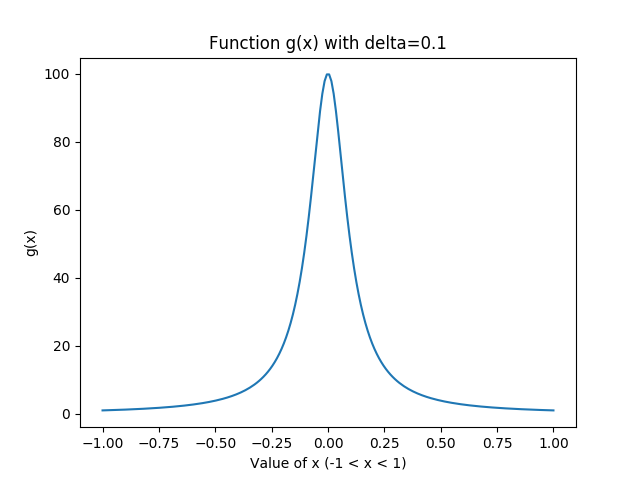
For delta=0.1
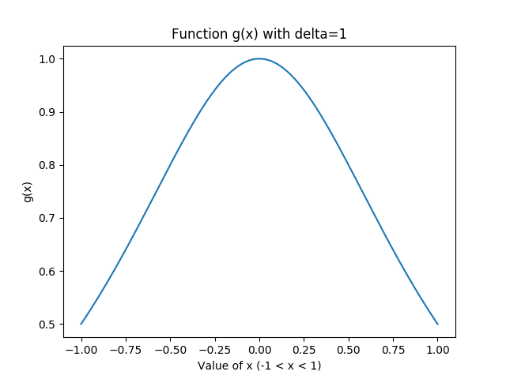
For delta=1
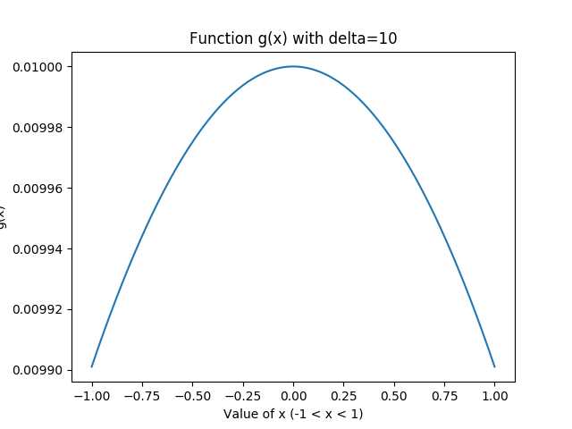
For delta=10
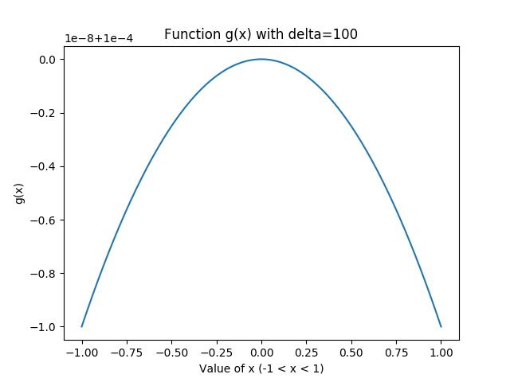
For delta=100
1.3.5 Fitting the function h(x) for different values of delta and 200 points in range [-1,1]:
For delta=1, with 20 coefficients:
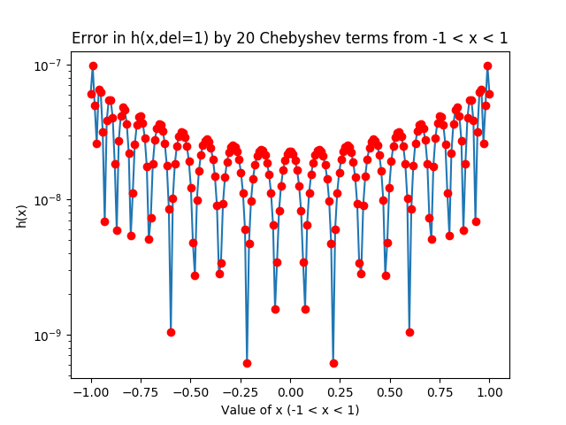
For delta=10, with 15 coefficients:
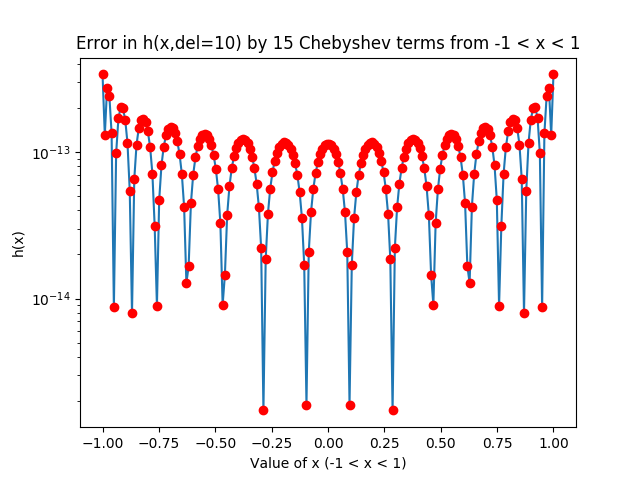
For delta=100, with 10 coefficients:
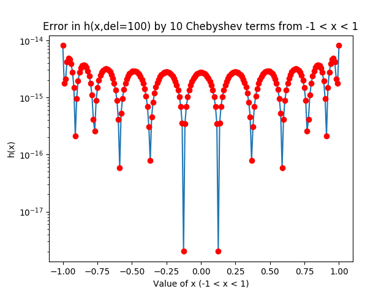
Plotting h(x) for different values of delta shows that small values of delta force the function to have sharp kinks at the edges of the interval, thus requiring significantly more coefficients for the Chebyshev series to converge.
1.4 Fourier function fitting
from scipy.integrate import quad
def f1(x,m):
return f(x)*cos(m*(x+1)*np.pi/2)
def fouriercoeffs(f1,N):
...: fcoeff=[]
...: for i in range(N):
...: fcoeff.append(quad(f1,-1,1,args=(i))[0])
...: return np.array(fcoeff)
Plots of fouriercoeffs for N=100 are as follows:
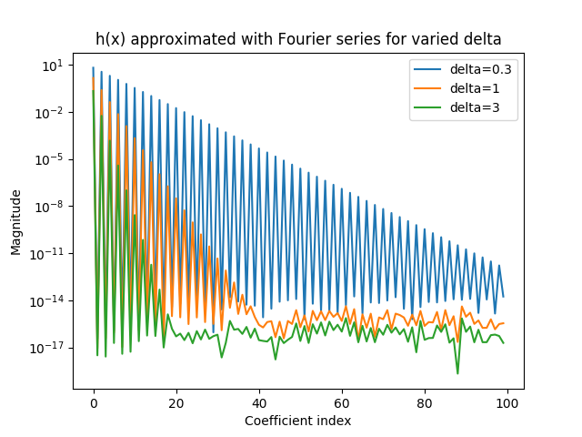
Clearly, since h(x) is periodic, it is able to be approximated well by a Fourier fit. The value of delta influences how quickly the series converges, with larger delta converging more quickly than small delta.
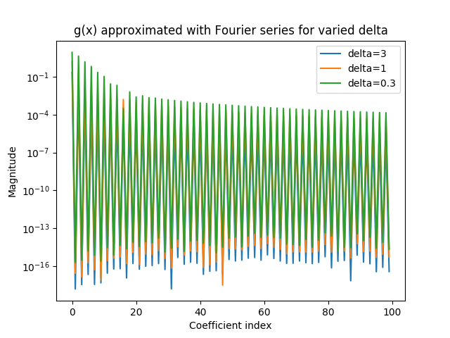
g(x) does not converge quickly, having well over 100 coefficients for various values of delta.
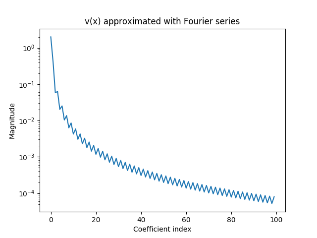
The magnitude of the coefficients of v(x) drop exponentially, but still are of the order of 10 − 4 at N=100.
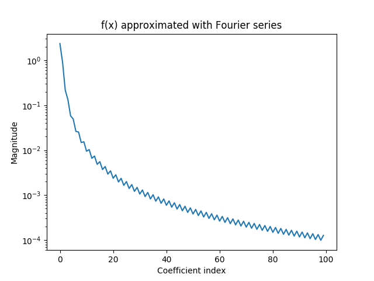
The coefficients of f(x) also drop in magnitude similar to v(x).
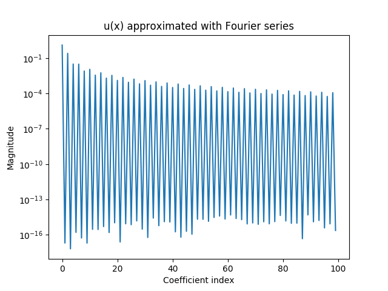
The coefficients of u(x) also don’t quickly decay with N.